Le jour du mariage est souvent vu comme une journée magique, pleine d’émotions, de rires et de moments forts. Pour les mariés, tout doit paraître fluide, naturel, évident. Pourtant, derrière cette impression de simplicité se cache un énorme travail d’organisation.
Être wedding planner, ce n’est pas seulement “préparer un joli mariage”. C’est gérer un projet complet, avec un budget, des prestataires, des timings, des imprévus et surtout… beaucoup de logistique.
Aujourd’hui, je vous emmène dans les coulisses, façon backstage, pour découvrir la préparation en amont et ce à quoi ressemble réellement une journée de mariage le jour J, notamment dans une région dynamique comme la Nouvelle-Aquitaine.
La préparation en amont : tout commence bien avant le jour J
Contrairement à ce que l’on imagine, le plus gros du travail ne se fait pas le jour du mariage. Le jour J n’est que la partie visible de l’iceberg. La réussite d’un mariage repose sur des semaines, parfois des mois de préparation.
Check de la to-do list : la base de toute l’organisation
Chaque mariage est un projet à part entière, presque comme une petite entreprise à organiser. Avant même de parler décoration, robe ou ambiance, la wedding planner commence par poser les bases : comprendre la vision des mariés, leurs envies, leurs contraintes, leur budget, puis transformer tout cela en un plan clair et structuré. C’est à ce moment-là que le rôle d’accompagnement prend tout son sens, car beaucoup de couples ne savent pas toujours par où commencer, ni dans quel ordre avancer.
La to-do list devient alors l’outil indispensable du quotidien. Elle permet d’y voir clair, de définir les priorités et surtout d’éviter de se sentir dépassé par la quantité de choses à gérer. Car dans l’organisation d’un mariage, tout se joue sur l’anticipation. Il faut penser aux grandes décisions, mais aussi à une multitude de détails qui peuvent sembler secondaires… jusqu’au moment où ils deviennent essentiels.
La wedding planner utilise cette checklist comme un fil conducteur. Elle y note les étapes clés, les actions urgentes, les validations à obtenir, les points à revoir, mais aussi les tâches à programmer sur le long terme. Cela lui permet d’anticiper les deadlines importantes, de planifier les rendez-vous avec les prestataires, de suivre l’avancement du dossier mariage semaine après semaine et de s’assurer que rien ne passe entre les mailles du filet.
Cette organisation rigoureuse est indispensable, car le mariage est un événement unique : il n’y a pas de seconde chance. Tout doit être prêt au bon moment, dans le bon ordre, et surtout sans stress inutile pour les mariés. Une simple validation oubliée, un document non signé ou une information mal transmise peut entraîner des conséquences importantes le jour J. C’est justement pour éviter ce genre de situation que la wedding planner travaille en amont avec méthode, précision et une vraie vision d’ensemble.
En réalité, cette to-do list n’est pas seulement une liste de tâches. C’est le cœur de l’organisation, la base qui permet ensuite de construire un mariage harmonieux, fluide et parfaitement orchestré.
2- Décors et ambiances thématiques
Les mariages thématiques connaissent un essor fulgurant. Les couples choisissent des thèmes qui reflètent leur personnalité et leurs passions. Les décorations, les costumes et même les menus sont soigneusement sélectionnés pour plonger les invités dans un univers unique. Que ce soit un voyage dans le temps vers les années folles, une aventure fantastique dans un royaume enchanté, ou encore une fête exotique inspirée des traditions culturelles du monde entier, chaque détail est pensé pour créer une expérience inoubliable.
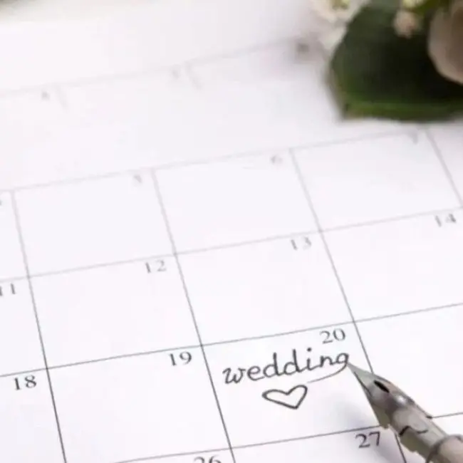
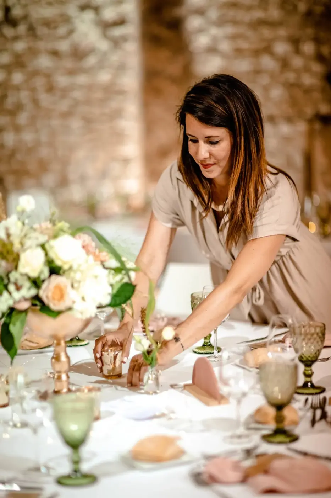
Recherche et sélection des prestataires : construire la bonne équipe
L’une des missions principales d’une wedding planner est d’aider les mariés à choisir les bons prestataires, en fonction de leur style, de leur budget et surtout de leurs attentes. Car un mariage réussi repose avant tout sur une équipe fiable, professionnelle et capable de travailler ensemble dans une ambiance sereine.
Cela concerne généralement tous les piliers essentiels du mariage : le traiteur, le photographe, le vidéaste, le DJ ou le groupe live, le fleuriste, la décoratrice, la location de mobilier, l’officiant de cérémonie, mais aussi toute la partie mise en beauté avec la coiffure et le maquillage.
Mais le travail de la wedding planner ne se limite pas à envoyer une liste de contacts. Elle prend le temps de comparer les prestations, de vérifier la cohérence avec le projet global, de conseiller les mariés selon leur personnalité et parfois même de négocier certains éléments pour optimiser le budget. Elle s’assure également que chaque prestataire comprend parfaitement l’univers du mariage et le niveau d’exigence attendu.
L’objectif est simple : créer une équipe solide, harmonieuse et expérimentée, capable de suivre un déroulé précis et de gérer la journée sans stress. Car le jour J, tout doit s’enchaîner naturellement, et cela dépend énormément de la qualité des prestataires choisis.

Création du rétroplanning : le guide ultime
Une fois les grandes décisions prises, place à l’un des outils les plus importants dans l’organisation d’un mariage : le rétroplanning.
Ce document est indispensable car il permet de savoir exactement quoi faire, quand le faire, et dans quel ordre avancer. Il sert de fil conducteur tout au long des préparatifs et évite aux mariés de se sentir perdus ou dépassés.
Le rétroplanning inclut généralement toutes les étapes clés, comme les démarches administratives, le choix des tenues, la dégustation du traiteur, la validation de la décoration, l’envoi des faire-part, l’organisation du plan de table, mais aussi la finalisation complète du déroulé du jour J.
Un mariage bien organisé est un mariage où les mariés peuvent avancer sereinement, sans avoir l’impression de courir après le temps. La wedding planner est là pour structurer chaque étape, donner une vision claire, anticiper les délais et surtout éviter cette fameuse charge mentale qui peut vite prendre le dessus pendant les préparatifs.
Moodboard, scénographie et ambiance du mariage : donner vie à une vision
La partie créative fait rêver… mais elle demande aussi énormément de précision. Car imaginer un univers de mariage, ce n’est pas seulement choisir de jolies couleurs ou repérer des inspirations sur Pinterest. C’est construire une véritable identité visuelle, cohérente, élégante et surtout fidèle à l’histoire du couple.
La wedding planner travaille alors sur l’ensemble de l’ambiance : définir l’univers du mariage (bohème, chic, romantique, moderne, minimaliste…), choisir une palette de couleurs, imaginer la décoration florale, harmoniser la papeterie (faire-part, menus, marque-places), réfléchir à l’éclairage et penser la mise en scène globale des espaces.
Tout est étudié pour que l’ensemble soit fluide et parfaitement équilibré. La cérémonie doit s’accorder avec le cocktail, la salle avec les tables, les petits détails avec les grands éléments décoratifs. Rien ne doit sembler “hors sujet” ou ajouté au hasard.
Ce travail de scénographie est souvent invisible pour les invités, car il paraît naturel une fois en place. Pourtant, c’est lui qui fait toute la différence sur le rendu final, sur l’atmosphère ressentie et sur les photos. Un mariage harmonieux est presque toujours le résultat d’une vision claire et d’un travail minutieux en amont.
Gestion du budget : éviter les mauvaises surprises
Le budget mariage est un sujet incontournable, et souvent l’un des plus sensibles. Beaucoup de couples ont une idée globale du montant qu’ils souhaitent investir, mais découvrent rapidement que certains coûts sont plus élevés que prévu, ou que certaines prestations impliquent des frais supplémentaires.
Une wedding planner aide justement à garder le contrôle. Son rôle est de répartir les dépenses intelligemment, en priorisant ce qui compte réellement pour les mariés. Elle permet aussi d’anticiper les coûts cachés qui peuvent vite faire grimper la facture : livraison, installation, démontage, heures supplémentaires, frais de déplacement ou matériel additionnel.
Grâce à son expérience, elle accompagne les mariés pour faire des choix stratégiques, trouver le bon équilibre entre rêve et réalité, et respecter le budget sans sacrifier l’esthétique ni la qualité. L’objectif n’est pas de tout réduire, mais d’investir au bon endroit et d’éviter les mauvaises surprises de dernière minute.
Car un mariage réussi, c’est aussi un mariage où l’on profite pleinement… sans stress financier.
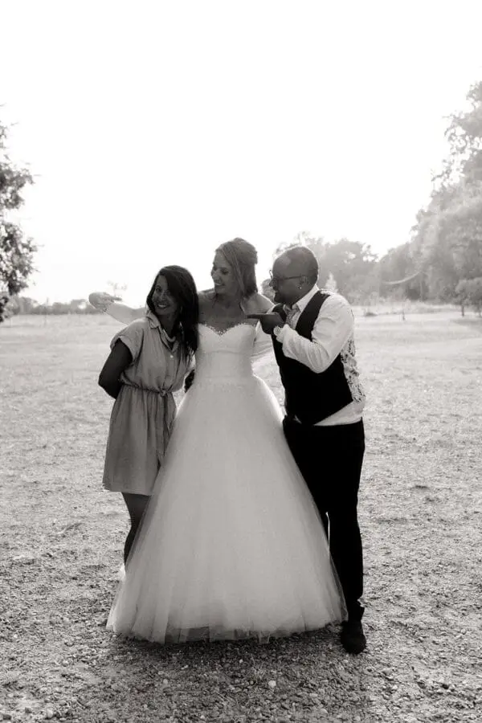
Coordination et échanges : mails, appels, confirmations… en boucle
C’est une partie du métier dont on parle rarement, mais qui demande un temps considérable : la communication. Une wedding planner passe ses journées à gérer une multitude de tâches, toutes centrées sur le suivi et la coordination. Elle répond aux messages des mariés, relance les prestataires, confirme les horaires, organise les rendez-vous, envoie des documents, vérifie les contrats et ajuste les détails selon les besoins.
Entre WhatsApp, mails, appels et visios, le téléphone devient presque une extension de sa main. Chaque interaction doit être soigneusement notée et suivie pour éviter le moindre oubli. Et pour tenir ce rythme effréné, il n’est pas rare qu’elle prenne quatre à cinq thés ou cafés par jour, indispensables pour rester concentrée et efficace.
Finalisation du planning du jour J
À l’approche du mariage, tout s’accélère. La wedding planner élabore le déroulé complet du jour J, minute par minute, pour que chaque moment se déroule parfaitement. Elle planifie l’arrivée des prestataires, l’installation de la décoration, la préparation des mariés, la cérémonie, le cocktail, les photos, l’entrée en salle, le dîner, les animations, la découpe du gâteau, l’ouverture du bal et la fin de soirée.
Mais elle ne s’arrête pas là : chaque prestataire reçoit un planning spécifique, détaillant exactement ce qu’il doit faire et à quel moment. Ce document devient la véritable clé de la fluidité, garantissant que tout le monde travaille en parfaite coordination et que chaque instant du mariage se déroule sans accroc.
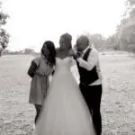
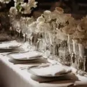
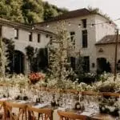
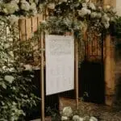
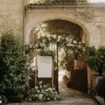
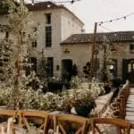
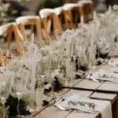
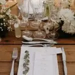
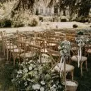
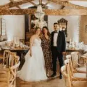
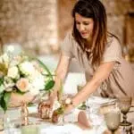
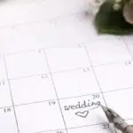
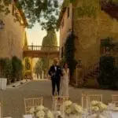
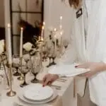
Le jour J : à quoi ressemble une journée de mariage en backstage ?
Le jour du mariage, tout doit fonctionner comme une mécanique parfaitement huilée. Pour les mariés, l’objectif est simple : profiter. Pour la wedding planner, c’est le moment où tout ce qui a été préparé prend vie.
Le matin : check final et installation
La wedding planner arrive tôt sur le lieu de réception. Avant même de dire bonjour, elle est déjà en mode contrôle, prête à vérifier chaque détail. Son regard balaie le lieu pour un tour complet, elle s’assure que le plan B en cas de météo capricieuse est bien en place, accueille les prestataires, coordonne les livraisons et supervise l’installation du mobilier et de la décoration.
C’est souvent à ce moment que les imprévus font leur apparition : un retard de livraison, une erreur de commande, un élément manquant… Le rôle de la wedding planner est de résoudre chaque problème rapidement, avec discrétion, afin que personne ne remarque rien et que le mariage puisse commencer parfaitement.
Installation de la décoration : précision et œil de lynx
Tous les détails de la décoration sont passés au crible. Les tables sont disposées avec soin, les fleurs sélectionnées et positionnées pour créer un ensemble harmonieux, les bougies sont alignées, le plan de table est vérifié, les cadeaux des invités placés avec goût, l’espace cérémonie optimisé et le coin photo prêt à accueillir les souvenirs.
Chaque élément doit être esthétique, équilibré et harmonieux. La wedding planner ajuste, déplace, corrige et peaufine jusqu’à la dernière minute, avec un œil attentif qui ne laisse échapper aucun détail. Chaque geste contribue à transformer le lieu en un espace magique et parfaitement orchestré.
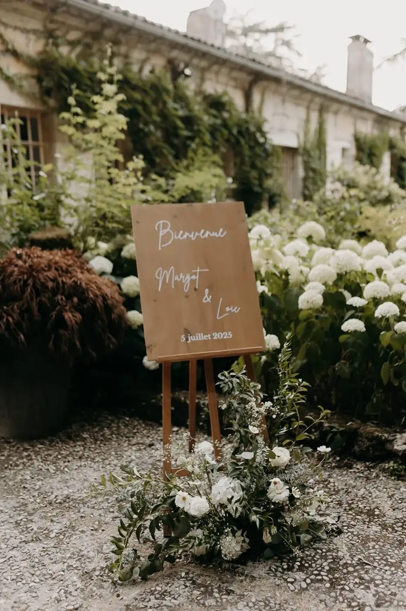
Dernière checklist anti-stress
Avant l’arrivée des invités, tout doit être validé et chaque détail minutieusement contrôlé. Les alliances sont prêtes, le bouquet soigneusement arrangé, la papeterie vérifiée, la musique de la cérémonie réglée, le micro et le son testés, le timing des prestataires confirmé et l’emplacement du photographe parfaitement défini.
C’est aussi le moment où la wedding planner sort son kit de secours, comprenant épingles, pansements, mouchoirs et produits anti-taches… parce qu’un mariage sans imprévu n’existe tout simplement pas. Elle anticipe chaque petite urgence pour que tout se déroule sans accroc, même lorsque les surprises surviennent.
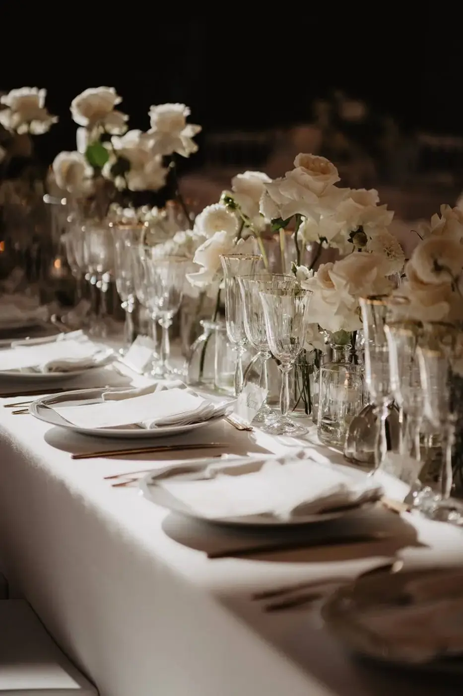
Préparatifs des mariés : gérer le timing et rassurer
Pendant que le lieu se finalise, la wedding planner veille à ce que les mariés restent parfaitement dans le rythme. Elle s’assure que la coiffure et le maquillage avancent comme prévu, que la robe est prête, que les témoins sont présents et surtout que personne ne panique.
Le jour J, l’émotion est très intense. Dans ces moments, la wedding planner devient un repère essentiel, calme, rassurante et stable, capable de gérer le stress ambiant tout en accompagnant les mariés avec douceur et professionnalisme. Elle incarne la sérénité au cœur de l’agitation, permettant à chacun de profiter pleinement de cette journée unique.
Accueil des invités et cérémonie : discrétion totale, coordination maximale
Les invités commencent à arriver et la wedding planner reste en arrière-plan, invisible mais hyper attentive. Elle observe chaque détail : le placement des convives, la musique, la circulation des personnes, le respect du timing. Chaque mouvement, chaque geste compte pour que tout se déroule harmonieusement.
La cérémonie est un moment clé du mariage. L’entrée des mariés, les discours, les musiques, la sortie et l’enchaînement vers le cocktail doivent être parfaitement synchronisés. Et si un imprévu survient, elle intervient discrètement, réglant chaque problème sans interrompre la magie de l’instant.
Cocktail : rythme, photos et coordination
Le cocktail est souvent perçu comme un moment de détente pour les invités, mais en coulisses, c’est une période stratégique. La wedding planner coordonne le service du traiteur, veille au timing des photos de groupe, supervise d’éventuelles animations et prépare la salle pour le dîner. C’est également souvent le seul moment où les mariés peuvent respirer un peu, sachant que chaque détail est pris en charge et que tout continue de se dérouler parfaitement.
Entrée en salle, dîner et surprises
Pendant que les invités profitent du cocktail, la wedding planner effectue un dernier check complet de la salle. Elle s’assure que les tables sont parfaites, que la lumière est adaptée, que les cadeaux des invités sont bien placés, que le DJ est briefé et que le timing du traiteur est validé.
Puis vient l’entrée en salle, un moment fort où l’énergie monte immédiatement. Pendant le dîner, la wedding planner continue de superviser chaque détail : le rythme des plats servis, les discours des proches, les surprises des témoins, les animations prévues et la coordination entre le DJ et le traiteur. Son objectif est clair : éviter les longueurs et maintenir un rythme fluide et agréable pour tous.
Ouverture de bal et soirée : la magie jusqu’au bout
Lorsque la soirée commence réellement, le travail n’est pas terminé. La wedding planner supervise l’ouverture du bal, l’arrivée du gâteau, le timing des moments clés et la coordination des prestataires, tout en gérant les petits imprévus de dernière minute. Même lorsque la piste de danse est remplie et que les invités s’amusent, elle reste attentive en coulisses, prête à intervenir si nécessaire pour que la magie se poursuive jusqu’au dernier instant.
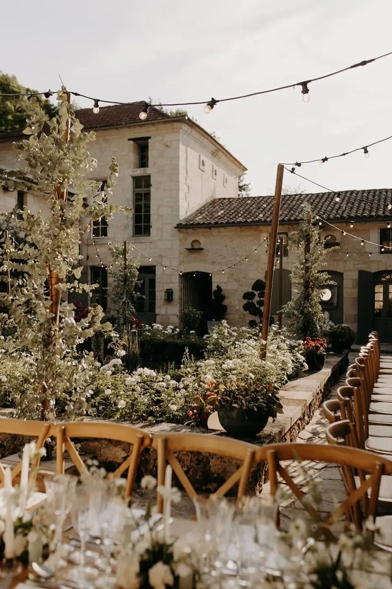
Fin de soirée : rangement, récupération et dernière mission
Alors que les invités continuent de profiter de la soirée, la wedding planner commence déjà à organiser la fin de l’événement. Elle récupère les affaires des mariés, sécurise les cadeaux, range les éléments de décoration, coordonne les prestataires et vérifie que le lieu est impeccable. Son objectif est clair : que les mariés n’aient rien à gérer, qu’ils puissent savourer chaque instant jusqu’au dernier moment, l’esprit léger et serein.
En Bref...
Une journée de mariage peut sembler simple et fluide pour ceux qui y participent, mais derrière les sourires, les larmes de joie et les moments forts se cache une organisation minutieuse. Rétroplanning, coordination des prestataires, logistique, timing, gestion des imprévus… tout est pensé à l’avance. Le rôle de la wedding planner est de rendre cette journée fluide, rassurante et inoubliable, pour que chaque instant soit magique. Car la véritable magie d’un mariage se prépare bien avant le premier “oui”.
Lovely Day Event c'est plusieurs types de prestations
L'organisation de mariage
Je vais intervenir sur toutes les étapes de vos préparatifs et vous guider dans vos choix. Je suis force de proposition pour que votre mariage ne ressemble qu’à vous.
Décoration de mariage
Créative et passionnée, je suis certifiée Wedding Designer et je conçois une ambiance scénographique qui correspond au thème de votre mariage.
Coordination le jour J
Je serai le chef d’orchestre pour gérer les différents prestataires, la mise en place de votre décoration et le déroulement de cette belle journée.